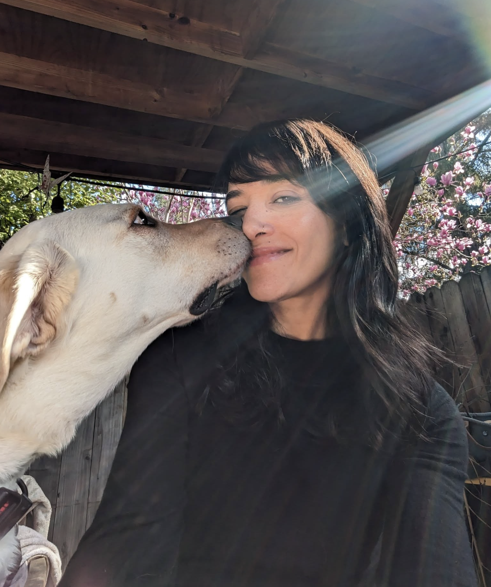

My name is Roshani Dhungana Andrews. I was born in Kathmandu long, long ago and now live in Menlo Park, California with my two children and my dog Charlie. I was a sound and video editor for a long time, and worked extensively in Nepal and India on various television channels and documentaries.
Since my boys were born, I have been working with my hands, and now do a variety of printmaking. I work with ink, acrylics, watercolor, charcoal, pen, and pencil. I make linocuts and woodcuts and hand-press them onto fabric and paper. I do lots of geometric work.
My biggest inspirations remain M.C. Escher and Vincent van Gogh.